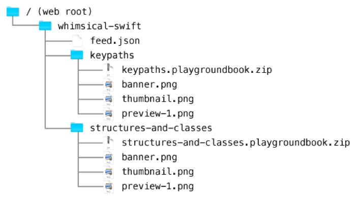

Publishing Subscriptions
サブスクリプションの出版
You'll need to put your playgrounds online so learners can download the playground books that make up your subscription. Uploading files usually involves a web host, which is a service provider that specializes in making data available online.
Almost any web host meets the requirements for putting a playground subscription online. However, the host must support TLS 1.3 encryption. You store a subscription’s playgrounds (zipped .playgroundbook files) as well as its feed (a JSON file) and supporting resources on the web host.
あなたは、あなたのプレイグラウンドをオンラインに置く必要があります、それで学習者はあなたのサブスクリプションを作り上げるプレイグラウンドブックをダウンロードできます。アップロードするファイルは、通常ウェブホストを必要とします、それはデータをオンラインで利用可能にすることを専門とするサービスプロバイダです。
ほとんど全てのウェブホストは、プレイグラウンドサブスクリプションをオンラインに置くための要件を満たします。しかしながら、ホストはTLS 1.3暗号化をサポートしなければなりません。あなたは、サブスクリプションの持つプレイグラウンド（zipされた.playgroundbookファイル）だけでなくそれのフィード（JSONファイル）およびサポートリソースをウェブホスト上に格納します。
Be sure to note the URLs that your web host uses to store each file; you'll use these to fill in the parts of the feed format described in Subscription Feed Format with URLs customized to your specific web host and your playground subscription. These URLs should match up with the URLs in the feed JSON.
あなたのウェブホストが各ファイルを格納するのに使うURLを忘れず書き留めてください；あなたはそれらを使ってSubscription Feed Formatで記述されるフィード書式の各部を、あなたの指定ウェブホストとあなたのプレイグラウンドサブスクリプションへのあつらえのURLで満たします。これらのURLは、フィードJSONの中のURLと調和しなければなりません。
Some web hosts have a file upload facility that lets you drag and drop a hierarchy of directories and files from your local filesystem. When writing the JSON for a feed, it can be helpful to compare the structure of your feed’s files with the structure of the URLs in the feed.
いくつかのウェブホストはファイルアップロード便宜を持ち、それはあなたにディレクトリおよびファイルの階層をあなたのローカルファイルシステムからドラッグ＆ドロップさせます。フィードのためのJSONを書いている時、それはあなたのフィードの持つファイルの構造をフィードの中のURLの構造と比較する助けとなりえます。
図 19-1 「サブスクリプションの作成」で示されるJSON例と対応するディレクトリ構造。 
Building a Landing Page for Your Playgrounds
あなたのプレイグラウンドのランディングページを作る
If you have an existing personal, business, or school website, you can add a page to that site linking visitors to your Swift Playgrounds subscriptions.
あなたが既存の個人の、ビジネスの、または学校のウェブサイトを持つならば、あなたはそのサイトにページを追加して、訪問者をあなたのSwift Playgroundsサブスクリプションと結びつけることができます。
To add a link to your feed, you'll need two pieces of information:
あなたのフィードにリンクを追加するには、あなたは２つの情報断片を必要とします：
The URL for your subscription's JSON feed. For example:
https://example.com/whimsical-swift/feed.json.
あなたのサブスクリプションの持つJSONフィードに対するURL。例えば：https://example.com/whimsical-swift/feed.json。The Swift Playgrounds universal link prefix:
https://developer.apple.com/ul/sp0?url=.
Swift Playgroundsユニバーサルリンク接頭辞：https://developer.apple.com/ul/sp0?url=。
Combine the two URLs to form a link on your site. The example below shows a HTML link surrounded by a descriptive sentence:
２つのURLを組み合わせて、あなたのサイト上のリンクを形成してください。下の例は、説明文によって囲まれるHTMLリンクを示します：
Check out my<a href="https://developer.apple.com/ul/sp0?url=https://example.com/whimsical-swift/feed.json">Swift Playgrounds subscription series</a>that whimsically highlights interesting facets of Swift!
Localizing a Feed
フィードの現地語化
You can provide localizations of your subscription content by first linking to a supplemental JSON object that maps locale IDs to locale-specific feeds.
あなたは、あなたのサブスクリプション内容の現地語化を追加JSONオブジェクトに最初にリンクすることによって可能です、それはローカルIDをロケール特有フィードにマップします。
Field
|
Description
|
|---|---|
A link to the localized JSON feed file for the specified locale.
|
For example, you can supply the following locale JSON to support a feed that’s localized to contain English and French versions of a subscription’s content:
例えば、あなたは以下のロケールJSONを提供してあるフィードをサポートできます、それはサブスクリプションの内容の英語およびフランス語バージョンを含むように現地語化されます。
{"en": "en-feed.json","fr": "fr-feed.json"}
Manually Adding a Subscription
手動でサブスクリプションを追加する
If you want to distribute your playground in a classroom or workshop environment, you can instruct learners to enter the URL of your feed manually. In Swift Playgrounds, press the "Add Subscription" button and enter the URL for your feed. Manually-entered URLs must not include the Swift Playgrounds subscriptions universal link prefix. Instead, use the raw URL from your web host for the feed.
あなたがあなたのプレイグラウンドを教室またはワークショップ環境で配布したいならば、あなたは学習者をあなたのフィードのURLを手動で入力するように指示することができます。Swift Playgroundsにおいて、"Add Subscription"ボタンを押してあなたのフィードのURLを入力してください。手動で入力されたURLは、Swift Playgroundsサブスクリプションユニバーサルリンク接頭辞を含んではいけません。そうではなく、フィードのためのあなたのウェブホストからの生のURLを使ってください。
Subscription Feed Format
サブスクリプションフィード書式
Copyright © 2017 Apple Inc. All rights reserved. Terms of Use | Privacy Policy | Updated: 2017-11-13